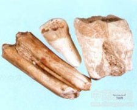

龙齿

拼音
Lónɡ Chǐ
别名
无别名
来源
为古代哺乳动物如象类、犀牛类、三趾马等的牙齿化石。
生境分布
主产河南、河北、山西、内蒙古等地。
药材特点
矿物组分主要为磷灰石、纤磷石。 主含磷灰石 晶体结构属六方晶系。单晶体呈六方柱状或厚板状，隐晶质为依动物牙齿形态的集合体。表面白色、青灰色。粗糙白垩质或稍显珐琅质光泽，或有灰白、灰、黄褐、褐黄色环带，似油脂状、珐琅状光泽。断口不平坦，显示出纤维状个体时硬度稍低，一般硬度大于或近于小刀。齿化石内部呈灰白色瓷状光泽，断口平坦或次贝壳状，硬度大于指甲，小于小刀，在5以下。原矿物具珐琅质和丘状脊形齿冠，不同于龙骨。
性状
呈完整的齿状或破碎成不规则的块状。主要为犬齿及臼齿。犬齿呈圆锥形，先端弯而尖，直径约3厘米，近尖端处常中空。臼齿呈圆柱形或方柱形，一端较细，略弯曲，多有深浅不同的沟棱。表面牙白色、青灰色或暗棕色，粗糙或有毒可见具光泽的珐琅质。质坚硬，断面不平坦，亦粗糙，有吸湿性。无臭，无味。
性味
甘，涩，凉。
功能主治
宁心安神。用于神经衰弱，头晕目眩，心悸，失眠。
用法用量
3～5钱。
化学成分
主要成分均为碳酸钙、磷酸钙。
药理作用
1：无药理作用数据
摘录
《全国中草药汇编》